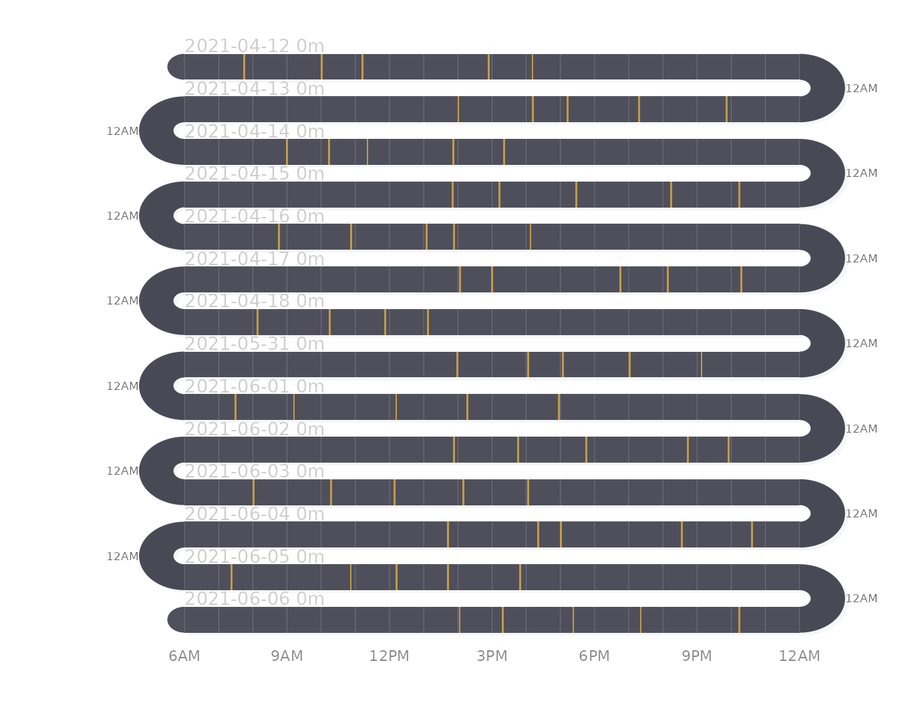
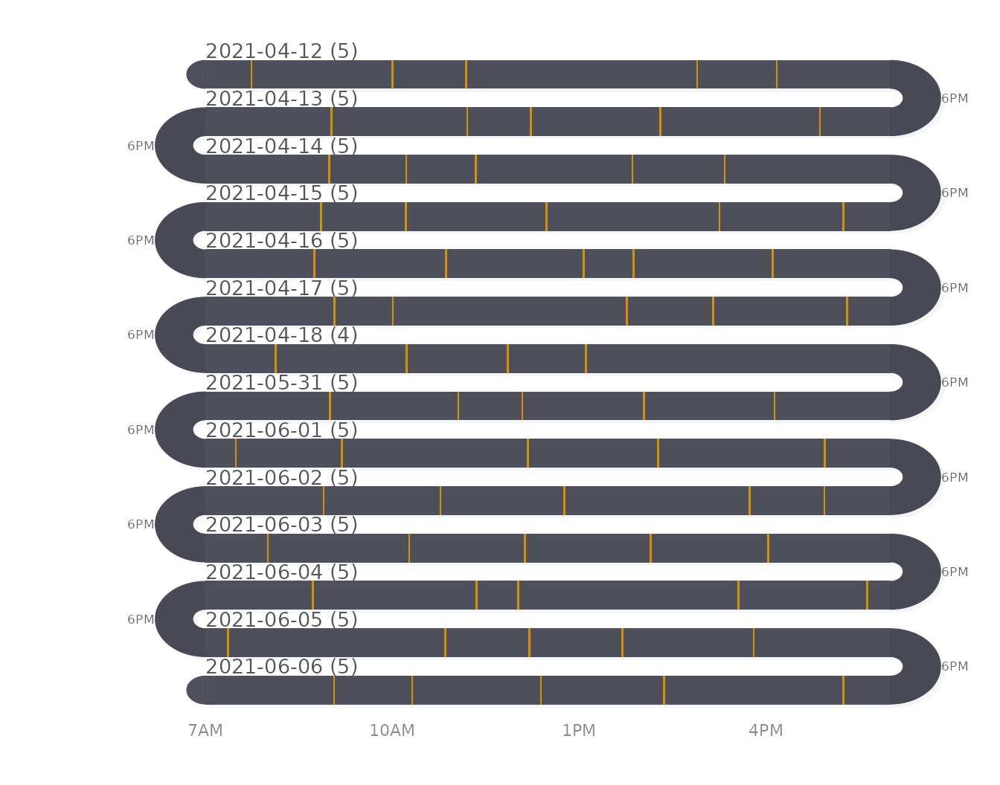
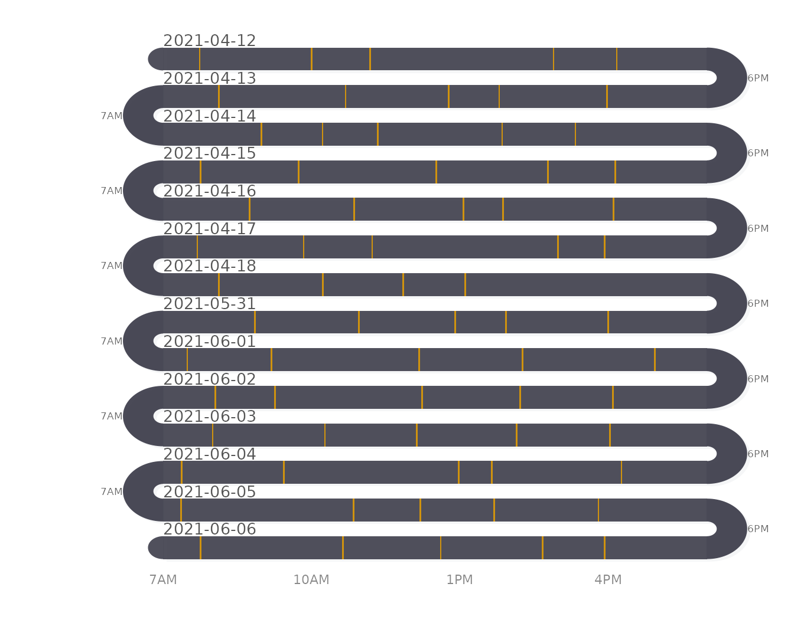
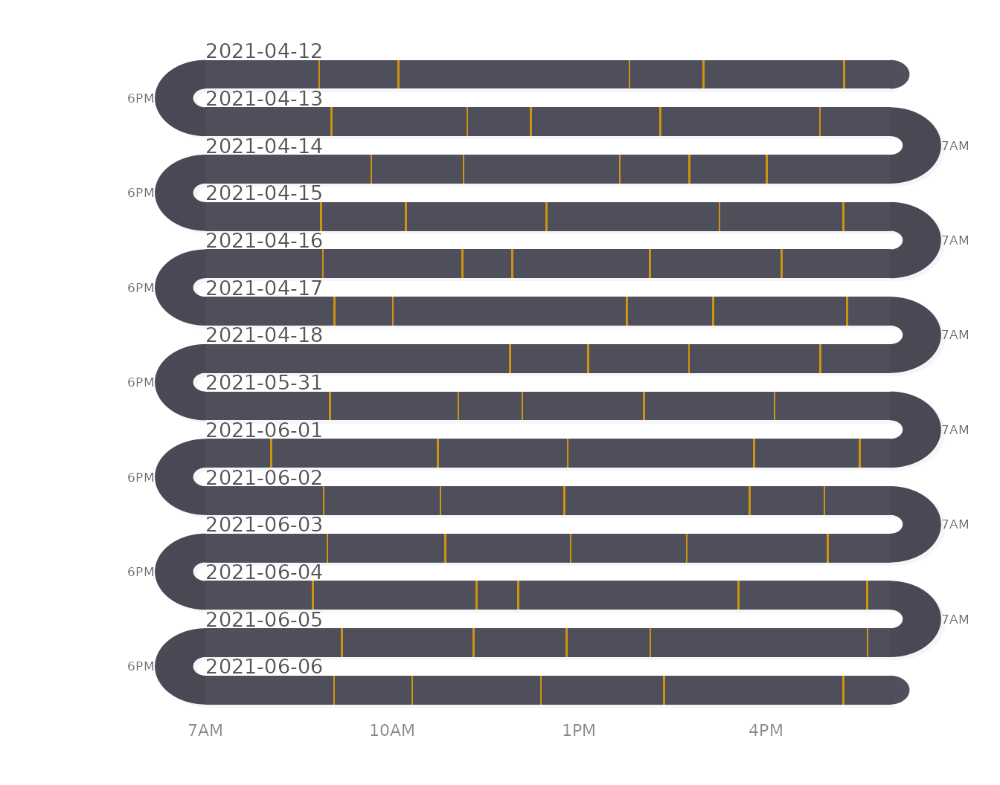
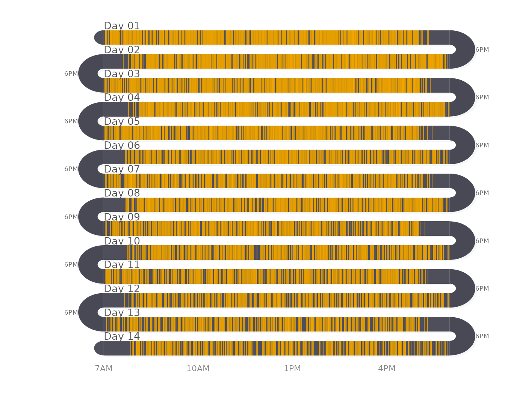
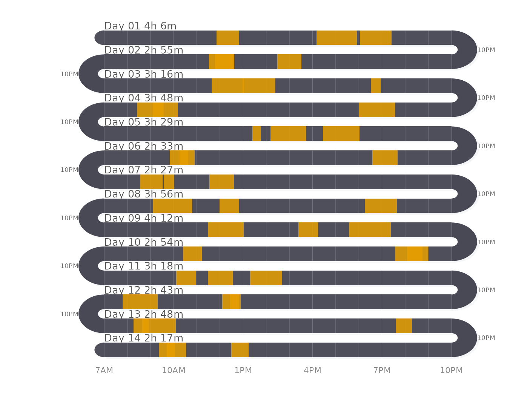
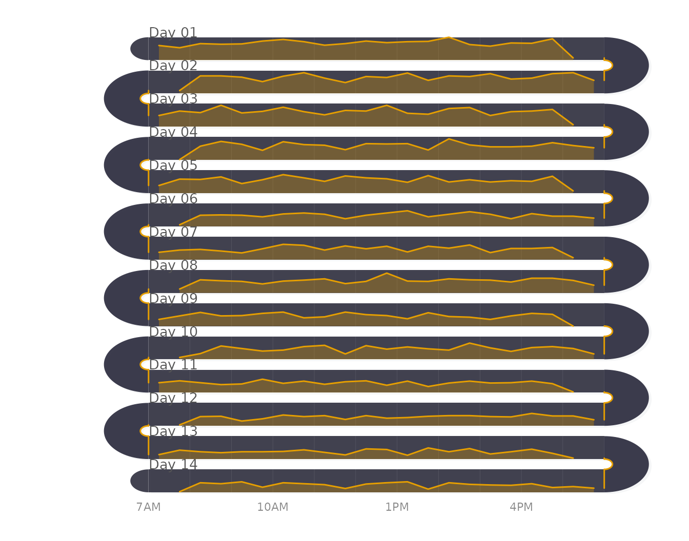
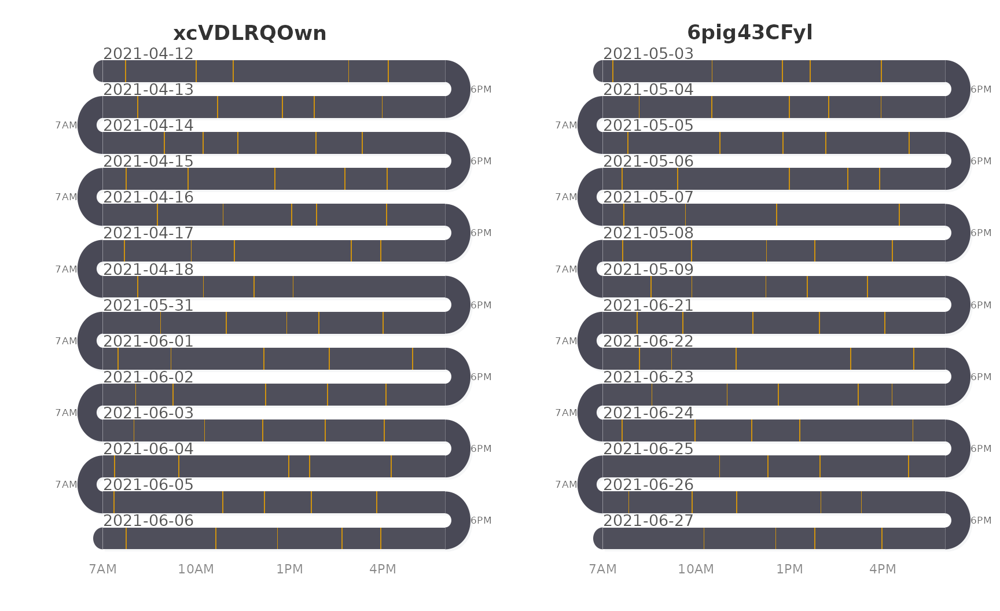

Daily activity and continuous signals
Written by Mohammed Saqr and Sonsoles López-Pernas
Source:vignettes/articles/activity.Rmd
activity.RmdTime-stamped events have two clocks: the calendar, which orders the days, and the time of day, which places each event within its day. A single time axis over two weeks compresses each day into a sliver and hides daily routines; fourteen separate panels hide the continuity from one day to the next. A snake plot gives each day its own band on a shared clock and joins the bands through U-turn arcs that stand for the night, so the same hour lines up across days and the days remain one ordered series.
This guide covers activity_snake() for events (instants
drawn as rug ticks, episodes drawn as duration blocks), the clock window
(day_start, day_end) and reading order
(flow, start_from), line_snake()
for a continuous signal measured through the day, and
facet_snake() for side-by-side panels. Categorical
sequences are covered in the sequences
guide.
The seed is set once because one example below uses simulated study sessions; every other example uses the bundled data.
Data
ema_beeps holds the answered prompts (“beeps”) of an
experience sampling study of university students over 14 study days
(Neubauer & Schmiedek, 2024; data CC-BY 4.0 at https://osf.io/bhq3p).
-
Participant:
id— anonymised identifier. -
Study day:
day— 1 to 14. -
Event time:
start_time— date and clock time of the answered beep (POSIXct). This is the column the activity plots use. -
Ratings:
happy,angry— emotion ratings on a 1–5 scale, not used in this guide.
with(ema_beeps, c(beeps = length(id), participants = length(unique(id)),
days = length(unique(day))))
#> beeps participants days
#> 11474 321 14The data hold 11,474 answered beeps from 321 participants.
One participant’s beeps as a rug
The first question is when participant xcVDLRQOwn
answered the beeps: on which dates, and at which times of day. The beeps
are selected with subset() and counted by calendar date;
the earliest and latest clock times are computed as well.
one <- subset(ema_beeps, id == "xcVDLRQOwn", select = start_time)
with(one, table(date = as.Date(start_time)))
#> date
#> 2021-04-12 2021-04-13 2021-04-14 2021-04-15 2021-04-16 2021-04-17 2021-04-18 2021-05-31
#> 5 5 5 5 5 5 4 5
#> 2021-06-01 2021-06-02 2021-06-03 2021-06-04 2021-06-05 2021-06-06
#> 5 5 5 5 5 5
with(one, range(format(start_time, "%H:%M")))
#> [1] "07:20" "16:55"The participant answered 69 beeps on 14 dates: five on every date except 18 April, which has four. The dates form two blocks of seven consecutive days, 12–18 April and 31 May–6 June 2021, so the 14 study days are two separate weeks. All answers fall between 07:20 and 16:55.
activity_snake() accepts a data frame with a single
POSIXct column. Each date becomes one band, each beep one tick at its
clock time, and the bands use the default window from 6AM to
midnight.
activity_snake(one)
Each band is one date, labelled with the date and the total duration of its events (zero for instantaneous events). Each tick marks the clock time of one beep. With the default window the hours from 6AM to 07:20 and from 16:55 to midnight hold no events at all.
Fitting the clock window
day_start and day_end set the window in
minutes from midnight. A window from 7AM (420) to 6PM (1080) contains
every beep computed above and gives the answered hours the full band
width. show_total = FALSE drops the duration from the
labels, because instantaneous events have no duration;
show_grid = FALSE removes the hour grid lines, which are
drawn as thin vertical lines like the ticks themselves; and a darker
label_color makes the date labels easier to read on a white
page.
activity_snake(one, day_start = 420, day_end = 1080,
show_total = FALSE, show_count = TRUE, show_grid = FALSE,
label_color = "#555555", event_color = "#E69F00")
The same 69 ticks now spread over a window of 11 hours instead of 18, so beeps that sat close together in the default plot are further apart. The count in each label repeats the date table above.
Reading order: flow and start_from
By default activity_snake() alternates the reading
direction (flow = "snake"): the first band runs from 7AM on
the left to 6PM on the right, the arc carries the reader to the next
band, which runs from 7AM on the right to 6PM on the left, and so on.
Each arc therefore joins the end of one day to the start of the next,
but the same clock time sits on opposite sides in alternate bands. With
flow = "natural" every band runs from
day_start on the left to day_end on the right,
so a given hour sits at the same horizontal position in every band.
activity_snake(one, day_start = 420, day_end = 1080, flow = "natural",
show_total = FALSE, show_grid = FALSE,
label_color = "#555555", event_color = "#E69F00")
For comparisons of time of day across days, such as whether the first
beep is answered earlier on some dates than on others, the natural flow
is the right choice because the clock is aligned across bands.
start_from = "right" mirrors the layout, so the first band
starts on the right; in natural flow every band then runs from right to
left.
activity_snake(one, day_start = 420, day_end = 1080, flow = "natural",
start_from = "right", show_total = FALSE, show_grid = FALSE,
label_color = "#555555", event_color = "#E69F00")
The cohort: when ticks saturate
The same question for the whole cohort is when in the day the 321
participants answer. Pooling across participants requires one band per
study day rather than per calendar date, because participants started on
different dates. activity_snake() also accepts a data frame
with day (a label), start (minutes from
midnight) and duration (minutes; 0 for an instant), which
transform() builds from the time stamps.
cohort <- transform(ema_beeps,
day = sprintf("Day %02d", day),
start = 60 * as.integer(format(start_time, "%H")) +
as.integer(format(start_time, "%M")),
duration = 0)
with(cohort, table(hour = start %/% 60))
#> hour
#> 7 8 9 10 11 12 13 14 15 16 17
#> 979 1184 1089 1291 1112 1241 1048 1232 990 1197 111
with(cohort, table(day))
#> day
#> Day 01 Day 02 Day 03 Day 04 Day 05 Day 06 Day 07 Day 08 Day 09 Day 10 Day 11 Day 12
#> 1161 1110 1050 985 924 779 756 853 729 735 689 630
#> Day 13 Day 14
#> 537 536Every beep falls between 7:00 and 17:59. The hourly counts lie between 979 and 1,291 for the hours from 7 to 16 and drop to 111 in the hour from 17:00, so beeps are spread evenly over the day until the last hour. The number of beeps per study day falls from 1,161 on day 1 to 536 on day 14.
activity_snake(subset(cohort, select = c(day, start, duration)),
day_start = 420, day_end = 1080, tick_width = 1,
show_total = FALSE, label_color = "#555555",
event_color = "#E69F00")
Each band now holds between 536 and 1,161 ticks, one per beep
answered on that study day. At this density the ticks overlap, and the
rug encodes little more than the window in which beeps occur: a rug is
suited to tens of events per band, not hundreds. When events are this
dense, counting them per time bin and drawing the counts as a continuous
signal, as in the line_snake() section below, keeps the
information the rug loses.
Episodes with a duration
Events with a length (study sessions, meetings, sleep) are drawn as blocks whose width is the duration. No bundled data set records durations, so this example simulates three study sessions on each of 14 days, starting between 8:00 and 20:00 and lasting 20 to 120 minutes.
sessions <- data.frame(
day = rep(sprintf("Day %02d", seq_len(14)), each = 3),
start = round(runif(42, min = 480, max = 1200)),
duration = round(runif(42, min = 20, max = 120))
)
head(sessions)
#> day start duration
#> 1 Day 01 1083 82
#> 2 Day 01 711 59
#> 3 Day 01 970 105
#> 4 Day 02 983 65
#> 5 Day 02 809 62
#> 6 Day 02 985 48
aggregate(duration ~ day, data = sessions, FUN = sum)
#> day duration
#> 1 Day 01 246
#> 2 Day 02 175
#> 3 Day 03 196
#> 4 Day 04 228
#> 5 Day 05 209
#> 6 Day 06 153
#> 7 Day 07 147
#> 8 Day 08 236
#> 9 Day 09 252
#> 10 Day 10 174
#> 11 Day 11 198
#> 12 Day 12 163
#> 13 Day 13 168
#> 14 Day 14 137The daily study time ranges from 137 to 252 minutes across the 14 simulated days.
activity_snake(sessions, day_start = 420, day_end = 1320,
event_color = "#E69F00", label_color = "#555555")
Each block starts at the session’s start time and is as wide as its duration; the label of each band gives the total for that day, which is the sum in the table above written in hours and minutes. Overlapping sessions are drawn on top of each other in the same band.
Continuous signals: line_snake
line_snake() (experimental; its interface may change)
draws a numeric signal measured through the day as a line inside each
band. The input is a data frame with day, time
(minutes from midnight) and value. The signal here is the
answering rate of the cohort: the number of beeps answered in each
30-minute bin of each study day, placed at the middle of the bin.
beep_rate <- aggregate(value ~ day + time,
data = transform(cohort, value = 1,
time = 30 * (start %/% 30) + 15),
FUN = sum)
head(beep_rate)
#> day time value
#> 1 Day 01 435 49
#> 2 Day 02 435 44
#> 3 Day 03 435 38
#> 4 Day 04 435 41
#> 5 Day 05 435 27
#> 6 Day 06 435 29
summary(with(beep_rate, value))
#> Min. 1st Qu. Median Mean 3rd Qu. Max.
#> 3 31 39 39 48 75The table has one row per study day and half-hour bin in which at least one beep was answered. The number of beeps per bin ranges from 3 to 75, with a median of 39.
line_snake(beep_rate, day_start = 420, day_end = 1080,
line_color = "#E69F00", fill_color = "#E69F00",
label_color = "#555555")
Each band is one study day from 7AM to 6PM, and the height of the line within the band is the number of beeps in the half-hour bin. The values are scaled to the band height over the whole plot, so heights are comparable across days. Bins with no answered beep are absent from the table, and the line joins the neighbouring bins across them.
Side-by-side panels: facet_snake
facet_snake() splits a data frame by one column and
draws one panel per value, passing the remaining columns and any further
arguments to the plotting function (activity_snake() by
default). The question here is whether two participants with similar
numbers of answered beeps answer at similar times.
pair <- subset(ema_beeps, id %in% c("xcVDLRQOwn", "6pig43CFyl"),
select = c(id, start_time))
with(pair, table(id))
#> id
#> 6pig43CFyl xcVDLRQOwn
#> 67 69Participant 6pig43CFyl answered 67 beeps and
xcVDLRQOwn 69.
facet_snake(pair, "id", day_start = 420, day_end = 1080,
flow = "natural", show_total = FALSE, show_grid = FALSE,
label_color = "#555555", event_color = "#E69F00")
Each panel is the natural-flow rug of one participant, titled with the participant’s identifier, on the same 7AM–6PM window, so tick positions can be compared across panels as well as across bands.
When to use which
-
Instants, up to about a hundred per band:
activity_snake()with rug ticks (duration = 0or a bare time stamp column). -
Episodes with a length:
activity_snake()with aduration(or anendtime stamp); the band label gives the daily total. -
Hundreds of events per band, or a measured
quantity: aggregate per time bin and draw the result with
line_snake(). -
Comparing persons or groups:
facet_snake()with the grouping column. -
Comparing clock times across days:
flow = "natural"and a window (day_start,day_end) that matches the data.
Reference
Neubauer, A. B., & Schmiedek, F. (2024). Approaching academic adjustment on multiple time scales. Zeitschrift für Erziehungswissenschaft, 27(1), 147–168. https://doi.org/10.1007/s11618-023-01182-8